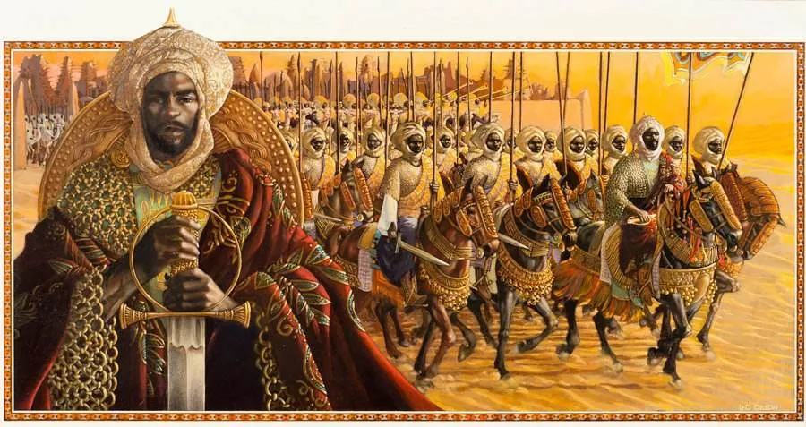
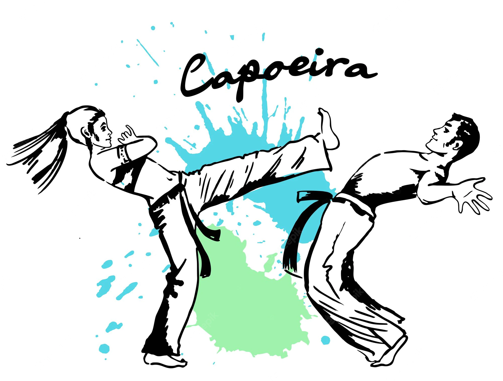
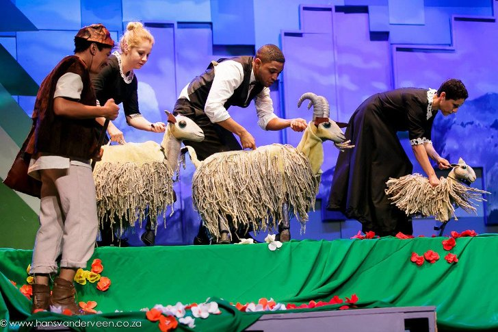
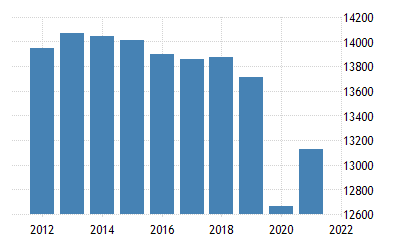

História
A África do Sul era uma região habitada por populações tradicionais. No ano de 1488, o navegador Bartolomeu Dias contornou o então chamado cabo da Boa Esperança, na porção extremo-sul do continente africano, dando assim início ao processo de colonização do país.
Por razão da sua posição geográfica estratégica, foi amplamente disputada por nações colonizadoras, como portugueses, holandeses e ingleses. A Holanda, cujo nome oficial é Países Baixos, foi o primeiro país a instalar uma colônia oficialmente reconhecida no território sul-africano, mais precisamente no ano de 1652.
No entanto, o Reino Unido acabou assumindo a antiga colônia holandesa em 1806, e os britânicos ampliaram seu controle sobre toda a região, fundando diversos povoamentos. O processo de ocupação britânico foi finalizado em 1910, em razão da independência da África do Sul.
No entanto, o Reino Unido acabou assumindo a antiga colônia holandesa em 1806, e os britânicos ampliaram seu controle sobre toda a região, fundando diversos povoamentos. O processo de ocupação britânico foi finalizado em 1910, em razão da independência da África do Sul.
Cultura
O Jazz é muito valorizado dentro dos costumes africanos;
A capoeira tem grande influência africana, misturando esporte, música e dança;
O Festival Klein Karoo Kunst Fees, que reúne arte e música é um dos mais esperados do ano;
Política
O governo sul-africano funciona segundo um sistema parlamentar, se bem que o Presidente da África do Sul seja ao mesmo tempo chefe de estado e chefe de governo. O presidente é eleito numa sessão conjunta do parlamento bicameral, que consiste de uma Assembleia Nacional (National Assembly), ou câmara baixa, e um Conselho Nacional de Províncias (National Council of Provinces, NCoP), ou câmara alta. A Assembleia Nacional tem 400 membros, eleitos em representação proporcional. O Conselho Nacional de Províncias, que substituiu o senado em 1997, é composto por 90 membros representando cada uma das nove províncias da África do Sul, além das grandes cidades. Cada província da África do Sul tem uma Legislatura Provincial unicameral e um Conselho Executivo liderado por um primeiro-ministro (premier). Todos os artigos da constituição permanente anunciada em maio de 1996 passaram a vigorar em 30 de junho de 1997.
Informações gerais
Nome oficial: República da África do Sul Gentílico: sul-africano Governo: república parlamentarista Idioma: africâner e inglês (principais) População: 57.780.000 habitantes Moeda: Rand PIB per capita: US$6.347,03
Pontos Turísticos
Península do Cabo

Península do Cabo, que faz parte da Região Floral do Cabo – tão famosa por sua biodiversidade e que, em 2004, foi inscrita na lista de Patrimônios Mundiais da UNESCO, Fazendo um passeio de carro por mais 15 minutos, é possível conhecer o pico de Chapman, uma linda montanha do lado oeste da Península do Cabo.
Joanesburgo

Ela abriga alguns pontos turísticos da África do Sul interessantes, como o Museu do Apartheid, onde você pode aprender mais sobre o passado difícil do país e Maboneng, a melhor área da cidade para admirar a arte de rua.